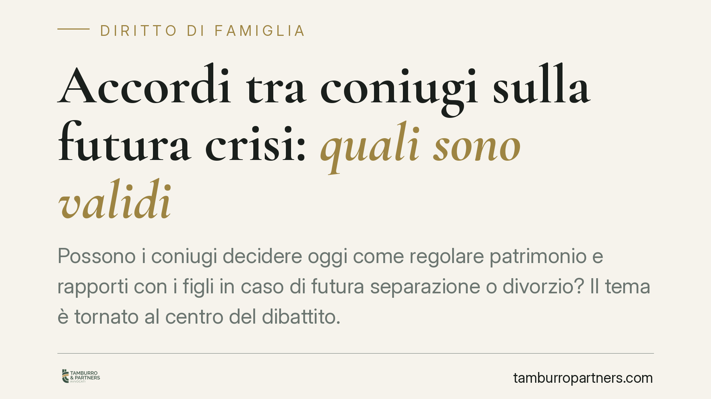

Accordi tra coniugi sulla futura crisi: quali sono validi
Possono i coniugi decidere oggi come regolare patrimonio e rapporti con i figli in caso di futura separazione o divorzio? Il tema è tornato al centro del dibattito. La linea di fondo resta un equilibrio: apertura verso l'autonomia negoziale, ma con limiti rigidi a tutela dei diritti indisponibili e dell'interesse dei minori. Vediamo cosa è concretamente pattuibile.

Il quadro del problema
Gli accordi prematrimoniali — intese con cui i coniugi, prima o durante il matrimonio, disciplinano gli effetti economici di una eventuale crisi — sono da tempo diffusi nella prassi anglosassone. In Italia la loro sorte è più incerta e va ricostruita distinguendo con precisione ciò che le parti possono liberamente regolare da ciò che resta sottratto alla loro disponibilità.
La domanda pratica è semplice: un patto sottoscritto oggi, in tempi sereni, reggerà davanti al giudice il giorno in cui i coniugi si separeranno? La risposta non è netta e dipende dall'oggetto dell'accordo.
Inquadramento normativo
Lo snodo storico è l'art. 160 del Codice civile, che vieta ai coniugi di derogare ai diritti e ai doveri previsti dalla legge per effetto del matrimonio. Su questa base, letta insieme all'art. 1322 c.c. (che ammette l'autonomia contrattuale solo entro i limiti imposti dall'ordinamento), la giurisprudenza tradizionale ha a lungo dichiarato nulli i patti che regolavano in anticipo gli effetti economici di una futura separazione o divorzio.
A questo si aggiunge un secondo pilastro: l'art. 5 della Legge n. 898/1970 (legge sul divorzio), che disciplina l'assegno divorzile. Le Sezioni Unite (sentenza n. 18287/2018) ne hanno chiarito la natura composita, riconoscendo accanto alla funzione assistenziale anche una componente compensativa-perequativa, volta a riequilibrare i sacrifici sostenuti da un coniuge durante la vita matrimoniale. Questa distinzione è decisiva per capire cosa sia disponibile e cosa no.
La distinzione che conta: assistenziale vs. compensativo
È qui che si gioca la partita. La componente assistenziale dell'assegno — quella che assicura al coniuge economicamente più debole i mezzi per una vita dignitosa — tocca un diritto tendenzialmente indisponibile: rinunciarvi in anticipo, quando ancora non si conoscono le condizioni future delle parti, è tradizionalmente considerato inefficace.
Diverso è il discorso per i profili compensativi e perequativi: la ripartizione di beni acquistati insieme, la sorte della casa familiare, la regolazione di apporti economici reciproci. Su questo terreno l'autonomia dei coniugi trova spazi maggiori, purché l'accordo non svuoti di fatto la tutela del coniuge più debole né si traduca in una rinuncia mascherata a diritti indisponibili.
Resta invece sempre indisponibile tutto ciò che riguarda i figli. Affidamento, collocamento, mantenimento e regole di frequentazione non possono essere cristallizzati in un patto vincolante: il giudice decide sull'interesse concreto del minore al momento della crisi, e nessun accordo anteriore può prevalere su questa valutazione.
Implicazioni pratiche
Per una coppia che voglia darsi regole chiare, il messaggio è duplice. Da un lato esiste uno spazio reale di programmazione, soprattutto sul versante patrimoniale e organizzativo. Dall'altro, un accordo redatto senza attenzione ai limiti di indisponibilità può risultare inefficace proprio quando dovrebbe operare, esponendo le parti a un contenzioso più lungo e imprevedibile di quello che intendevano evitare.
La prudenza, dunque, non è formalismo. Un patto ben costruito è quello che circoscrive con onestà il proprio ambito: regola ciò che è regolabile e non promette ciò che il diritto non consente di garantire. Va detto con chiarezza: si tratta di un'apertura verso l'autonomia dei coniugi, non di una garanzia che l'accordo sarà integralmente applicato.
Cosa fare in concreto
- Distinguete i piani. Separate ciò che è patrimoniale e disponibile (beni comuni, apporti, casa) da ciò che riguarda diritti indisponibili (mantenimento assistenziale, figli).
- Non inserite rinunce preventive all'assegno. Una clausola che azzera in anticipo la componente assistenziale rischia la nullità: meglio prevedere criteri di riequilibrio verificabili al momento della crisi.
- Escludete pattuizioni vincolanti sui figli. Potete indicare intenzioni condivise, ma sappiate che restano soggette alla valutazione del giudice sull'interesse del minore.
- Formalizzate con atto adeguato. Per gli aspetti patrimoniali valutate la forma dell'atto pubblico o della scrittura autenticata, così da garantire data certa e provenienza.
- Aggiornate l'accordo nel tempo. Consigliamo di rivedere le intese al mutare della situazione familiare ed economica: un patto fotografa un momento, non l'intera vita coniugale.
Un'ultima avvertenza
La materia è in evoluzione e ogni situazione ha specificità che incidono sulla validità delle singole clausole. Prima di sottoscrivere qualunque intesa, è essenziale una valutazione mirata del caso concreto.
---
Contributo informativo a cura di Tamburro & Partners – Avv. Giuseppe Tamburro. Non costituisce parere legale.
Ogni famiglia ha il suo equilibrio.
Separazione, divorzio, affidamento, assegno: se vuoi un confronto riservato su una specifica situazione, scrivi allo studio. Ti rispondiamo entro un giorno lavorativo.